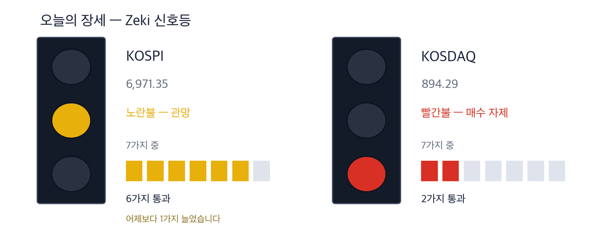

코스피 7,003.74 +0.46% | 코스닥 893.29 -0.11% | 제키 신호등 노란불 |

초록불은 매수 우위, 노란불은 관망, 빨간불은 매수 자제입니다. 칸은 7가지 조건 중 몇 가지를 만족하는지이고, 많을수록 오르는 종목이 넓게 퍼져 있습니다. 2일 종가 기준 코스피는 7가지 가운데 6가지를 만족해 노란불입니다. 코스닥은 2가지로 빨간불입니다. 둘 다 1일과 같습니다.
관망 — 신호등이 뜻하는 자세입니다.
코스피가 2일 0.46% 올라 7,003.74에 마감했습니다. 9월 23일 이후 처음으로 7,000을 넘었습니다. 코스닥은 0.11% 내린 893.29였습니다. 장중에는 903.81까지 올라 7월 2일 이후 처음 900을 넘었습니다. 코스닥 시가총액 상위 10개 가운데 6개가 반도체 업종입니다. 작년 말에는 하나도 없었습니다.
뉴욕증시는 2일 S&P 500이 7,722.72로 0.73% 올랐습니다. 나스닥 종합도 1.19% 올랐습니다. 같은 날 나온 미국 9월 비농업 고용은 2만9000명 늘어 예상의 3분의 1에 그쳤습니다. 금리를 더 올리기 어렵다는 관측이 나왔습니다. 하루 전인 1일에는 뉴욕에서 신저가 종목이 신고가 종목보다 많았습니다. (IBD 10/1)
외국인은 9월 유가증권시장에서 21조5200억원어치를 순매도했습니다. 판 금액은 2월보다 적었지만 산 금액이 절반 아래로 줄었습니다. 파는 것보다 사지 않는 것이 문제라는 뜻입니다. (한국경제 10/3자)
① 칩 값이 오르자 검사 장비주가 먼저 움직였습니다. 삼성전자가 내년 6세대 고대역폭메모리 값을 지금 주력 제품의 3배 넘게 불렀습니다. 칩이 비싸지면 일부만 뽑아 보던 검사를 전부 하게 됩니다.
② 인공지능 데이터센터 부품 부족이 2028년까지 간다는 진단이 나왔습니다. 반도체 기판과 콘덴서를 함께 만드는 삼성전기는 외국인과 기관이 함께 샀습니다.
③ 서울은 5일까지 쉬고 6일(화)에 다시 엽니다. 그사이 나온 미국 고용 부진과 뉴욕 상승이 6일 개장에 한꺼번에 들어옵니다. 8일에는 삼성전자 3분기 잠정실적이 나옵니다.
숫자 하나는 9월 소비자물가 상승률 2.9%입니다. 다시 2%대로 내려왔습니다. 그러나 석유 최고가격제가 없었다면 3.5%였다는 계산이 나왔습니다. 한국은행은 10월 물가를 3% 안팎으로 봅니다. (매일경제·한국경제 10/3자)
| 날짜 | 무엇을 보는가 | 시장에 어떤 영향 |
|---|---|---|
| 10월 6일(화) | 휴장 뒤 첫 거래일 | 미국 고용 부진과 2일 뉴욕 상승이 한꺼번에 반영됩니다 |
| 10월 8일(목) | 삼성전자 3분기 잠정실적 | 15조원 자사주 매입이 끝나 가는 때라 반도체 대형주의 방향이 정해집니다 |
| 10월 9일(금) | 한글날 휴장 | 그 주 거래일이 사흘로 줄어듭니다 |
삼성전자가 내년 6세대 고대역폭메모리 공급 가격으로 1Gb당 4달러대 중후반을 제시했습니다. 지금 주력인 5세대 제품은 1.5달러 안팎입니다. 내년 물량은 대부분 협의를 마쳤고, 가격 협상은 이달 안에 끝날 전망입니다.
칩 한 개 값이 오르면 불량 하나의 손실도 커집니다. 그래서 일부만 뽑아 보던 검사를 전부 하는 쪽으로 바뀌고 있다고 한화자산운용은 설명합니다. 메모리 후공정을 맡는 회사와 검사 장비 회사가 그 수요를 받습니다. (매일경제 10/3자)
| 종가 | 당일 | 한 주 | 20거래일 |
|---|---|---|---|
| 53,000원 | -0.38% | +22.40% | +70.69% |
| 3개월 | 제키 강도 | 고점 대비 |
|---|---|---|
| +145.37% | 97 | -0.38% |
| 누가 | 엑시콘, 메모리 반도체를 검사하는 장비를 만드는 회사입니다. |
| 무엇을 | 2일 0.38% 내린 53,000원에 마감했습니다. 한 주 동안은 22.40% 올랐습니다. |
| 언제 | 10월 2일, 사흘 휴장 전 마지막 거래일입니다. |
| 어디서 | 코스닥에 상장돼 있습니다. 하루 거래대금은 약 219억원입니다. |
| 왜 | 메모리를 전부 검사하게 되면 검사 장비가 더 많이 필요하기 때문입니다. |
| 어떻게 | 거래량이 50일 평균의 1.29배로 늘었고, 1년 최고가 바로 아래에서 마쳤습니다. |
| 종가 | 당일 | 한 주 | 20거래일 |
|---|---|---|---|
| 11,460원 | +3.06% | +8.42% | +97.59% |
| 3개월 | 제키 강도 | 고점 대비 |
|---|---|---|
| +94.57% | 94 | 0.00% |
| 누가 | SFA반도체, 메모리 칩의 포장과 검사를 맡아 하는 회사입니다. |
| 무엇을 | 2일 3.06% 올라 11,460원에 마감했습니다. 1년 최고가입니다. |
| 언제 | 10월 2일입니다. 외국인은 이날도 샀고 기관은 팔았습니다. |
| 어디서 | 코스닥에 상장돼 있습니다. 하루 거래대금은 약 980억원입니다. |
| 왜 | 칩을 전부 검사하게 되면 검사를 맡기는 물량이 늘기 때문입니다. |
| 어떻게 | 거래량이 50일 평균의 1.66배로 늘며 올랐습니다. |
| 종가 | 당일 | 한 주 | 20거래일 |
|---|---|---|---|
| 29,150원 | +12.98% | +16.37% | +49.79% |
| 3개월 | 제키 강도 | 고점 대비 |
|---|---|---|
| +80.05% | 94 | 0.00% |
| 누가 | 오킨스전자, 반도체 검사에 쓰는 소켓을 만드는 회사입니다. |
| 무엇을 | 2일 12.98% 올라 29,150원에 마감했습니다. 1년 최고가입니다. |
| 언제 | 10월 2일, 코스닥이 장중 900을 넘은 날입니다. |
| 어디서 | 코스닥에 상장돼 있습니다. 하루 거래대금은 약 156억원입니다. |
| 왜 | 검사 물량이 늘면 칩을 꽂는 소켓도 그만큼 자주 바꿔야 하기 때문입니다. |
| 어떻게 | 거래량이 50일 평균의 3.80배로 늘며 올랐습니다. |
100MW급 인공지능 데이터센터 1곳에는 GPU 약 4만 개와 고대역폭메모리 약 33만 개가 들어갑니다. 반도체 기판(FC-BGA)은 약 17만 개, 적층세라믹콘덴서(MLCC)는 약 3억3000만 개입니다. 한 해 쓰는 전기는 포항시와 맞먹습니다. (한국경제 10/3자)
업계는 이런 부품 부족이 적어도 2028년까지 간다고 봅니다. 기판은 삼성전기와 LG이노텍이 만듭니다. LG이노텍은 추세 지표가 0 아래(가격의 −5.93%)라 오늘은 다루지 않습니다.
| 종가 | 당일 | 한 주 | 20거래일 |
|---|---|---|---|
| 1,577,000원 | +1.48% | +5.06% | +12.64% |
| 3개월 | 제키 강도 | 고점 대비 |
|---|---|---|
| -28.48% | 98 | -30.53% |
| 누가 | 삼성전기, 반도체 기판과 적층세라믹콘덴서를 만드는 회사입니다. |
| 무엇을 | 2일 1.48% 올라 1,577,000원에 마감했습니다. |
| 언제 | 10월 2일입니다. 이날 하루도 외국인·기관 모두 순매수였습니다. |
| 어디서 | 유가증권시장에 상장돼 있습니다. 하루 거래대금은 약 9,042억원입니다. |
| 왜 | 데이터센터에 들어가는 기판과 콘덴서가 모두 이 회사의 주력 제품이기 때문입니다. |
| 어떻게 | 서버용 고성능 기판은 공급이 가장 빠듯한 부품으로 꼽혔습니다. |
일진전기가 2일 영국 해상풍력 단지의 송전망 공사를 따냈다고 공시했습니다. 땅속에 묻는 초고압 전선이며 1억400만파운드(약 1871억원) 규모입니다. 7월 수주분을 합치면 이 사업에서만 2716억원입니다. 회사가 따낸 전선 사업 가운데 가장 큽니다. (한경 10/3자)
HD현대중공업도 충남 태안 해상풍력 변전소를 짓습니다. 다만 추세 지표가 0 아래라 오늘은 다루지 않습니다. (매경 10/3자)
| 종가 | 당일 | 한 주 | 20거래일 |
|---|---|---|---|
| 86,000원 | +3.24% | +5.13% | +27.41% |
| 3개월 | 제키 강도 | 고점 대비 |
|---|---|---|
| +3.12% | 82 | -40.32% |
| 누가 | 일진전기, 초고압 전선과 변압기를 만드는 회사입니다. |
| 무엇을 | 2일 3.24% 올라 86,000원에 마감했습니다. 거래량은 50일 평균의 1.82배였습니다. |
| 언제 | 수주는 10월 2일 공시됐습니다. |
| 어디서 | 영국 해상풍력 단지와 육지를 잇는 구간입니다. 회사는 유가증권시장에 상장돼 있습니다. |
| 왜 | 바다에서 만든 전기를 육지로 보내려면 초고압 전선이 반드시 필요하기 때문입니다. |
| 어떻게 | 땅속에 묻는 초고압 송전선을 공급합니다. |
현대차그룹은 3분기 미국에서 50만6200대를 팔았습니다. 분기 기준 처음으로 50만 대를 넘었고 엔진과 전기 모터를 함께 쓰는 차의 판매는 53% 늘었습니다. (매일경제 10/3자)
그러나 현대차 주가는 20거래일 동안 8.2% 내렸습니다. 외국인과 기관이 함께 팔았고 추세 지표도 0 아래(가격의 −7.75%)입니다. 판매가 주가로 이어지는지 보고 나서 다룹니다.
| 종목 | ①20거래일 상승 | ②강도 90↑ | ③외국인 순매수 | ④기관 순매수 | 충족 | 근거의 무게 |
|---|---|---|---|---|---|---|
| 엑시콘(092870) | O | O | O | O | 4/4 | 근거 확실 |
| SFA반도체(036540) | O | O | O | X | 3/4 | 근거 있음 |
| 오킨스전자(080580) | O | O | O | O | 4/4 | 근거 확실 |
| 삼성전기(009150) | O | O | O | O | 4/4 | 근거 확실 |
| 일진전기(103590) | O | X | X | O | 2/4 | 확인 필요 |
네 칸은 ①20거래일 동안 올랐는가 ②제키 강도가 90 이상인가 ③외국인이 20거래일 순매수했는가 ④기관이 20거래일 순매수했는가입니다. O의 개수가 근거의 무게를 정합니다. 오늘 실은 5종목 가운데 ①을 넘은 곳은 5곳, ②·③·④는 각각 4곳입니다. 검사 장비와 기판은 값과 돈이 함께 왔고, 해상풍력 전선은 수주가 앞서 있습니다.
| 종목 | 외국인 · 기관 20거래일 | 거래량 | 어떻게 읽나 |
|---|---|---|---|
| SFA반도체 036540 | 외 +15.4 · 기 -5.3 | 1.70배 | 주의 — 외국인만 사고 다른 쪽은 팔았습니다 |
| 포스코인터내셔널 047050 | 외 -1.6 · 기 +18.4 | 0.38배 | 주의 — 기관만 사고 다른 쪽은 팔았습니다 |
| 포스코DX 022100 | 외 -0.9 · 기 +9.8 | 0.26배 | 주의 — 기관만 사고 다른 쪽은 팔았습니다 |
| 우리금융지주 316140 | 외 +31.8 · 기 +3.3 | 1.05배 | 확인✓ — 함께 샀지만 거래가 얕습니다 |
| 대한항공 003490 | 외 +8.7 · 기 +2.2 | 0.81배 | 확인✓ — 함께 샀지만 거래가 얕습니다 |
| SK하이닉스 000660 | 외 -6.3 · 기 +0.1 | 0.58배 | 주의 — 기관만 사고 다른 쪽은 팔았습니다 |
| 대우건설 047040 | 외 -5.6 · 기 -2.5 | 1.04배 | 관망 — 둘 다 팔지만 거래가 말랐습니다 |
| 두산에너빌리티 034020 | 외 -7.2 · 기 -0.3 | 0.67배 | 관망 — 둘 다 팔지만 거래가 말랐습니다 |
| LG디스플레이 034220 | 외 -8.0 · 기 -0.6 | 0.60배 | 관망 — 둘 다 팔지만 거래가 말랐습니다 |
| 넷마블 251270 | 외 -11.1 · 기 -0.2 | 0.39배 | 관망 — 둘 다 팔지만 거래가 말랐습니다 |
| 종목 | 20일 동안 더 산 양(주) | Zeki 강도 | 20거래일 등락 | 기준일 |
|---|---|---|---|---|
| 우리금융지주 316140 | +31,830,909 | 66 | -2.2% | 10-02 |
| SFA반도체 036540 | +15,350,798 | 94 | +97.6% | 10-02 |
| 대한항공 003490 | +8,670,263 | 73 | +6.7% | 10-02 |
| 고영 098460 | +3,424,825 | 81 | +22.8% | 10-02 |
| 현대무벡스 319400 | +2,294,251 | 72 | -3.7% | 10-02 |
| 종목 | 20일 동안 더 산 양(주) | Zeki 강도 | 20거래일 등락 | 기준일 |
|---|---|---|---|---|
| 삼성전자 005930 | -18,489,897 | 93 | +10.2% | 10-02 |
| 넷마블 251270 | -11,138,579 | 11 | -4.7% | 10-02 |
| LG디스플레이 034220 | -8,023,601 | 10 | -4.9% | 10-02 |
| 두산에너빌리티 034020 | -7,230,443 | 47 | +6.3% | 10-02 |
| 한온시스템 018880 | -6,672,550 | 60 | +12.8% | 10-02 |
| 종목 | 20일 동안 더 산 양(주) | Zeki 강도 | 20거래일 등락 | 기준일 |
|---|---|---|---|---|
| 포스코인터내셔널 047050 | +18,354,295 | 52 | +6.4% | 10-02 |
| 삼성전자 005930 | +15,575,724 | 93 | +10.2% | 10-02 |
| 포스코DX 022100 | +9,769,685 | 20 | +0.2% | 10-02 |
| 한온시스템 018880 | +8,454,799 | 60 | +12.8% | 10-02 |
| 맥쿼리인프라 088980 | +4,872,219 | 28 | -0.4% | 10-02 |
| 종목 | 20일 동안 더 산 양(주) | Zeki 강도 | 20거래일 등락 | 기준일 |
|---|---|---|---|---|
| SFA반도체 036540 | -5,254,344 | 94 | +97.6% | 10-02 |
| 대우건설 047040 | -2,455,205 | 95 | +8.7% | 10-02 |
| 고영 098460 | -2,401,599 | 81 | +22.8% | 10-02 |
| NAVER 035420 | -2,011,223 | 28 | -8.0% | 10-02 |
| 와이씨 232140 | -1,973,920 | 71 | +40.5% | 10-02 |
기사와 값이 맞아도 자금은 따로 봅니다. 아래 표는 2일 거래량이 넘어야 할 거래량(50일 평균)을 실제로 넘었는지를 답합니다.
| 종목 | 넘었나 | 수급(기준일) | 어떻게 읽나 |
|---|---|---|---|
| 엑시콘(092870) | 1.29배 ✓ | 외 매수 · 기 매수 (10/2) | 관심 — 외국인·기관이 함께 샀고 거래도 늘었습니다 |
| SFA반도체(036540) | 1.66배 ✓ | 외 매수 · 기 매도 (10/2) | 주의 — 외국인만 사고 다른 쪽은 팔았습니다 |
| 오킨스전자(080580) | 3.80배 ✓ | 외 매수 · 기 매수 (10/2) | 관심 — 외국인·기관이 함께 샀고 거래도 늘었습니다 |
| 삼성전기(009150) | 0.66배 ✗ | 외 매수 · 기 매수 (10/2) | 확인 — 함께 샀지만 거래가 얕습니다 |
| 일진전기(103590) | 1.82배 ✓ | 외 매도 · 기 매수 (10/2) | 주의 — 기관만 사고 다른 쪽은 팔았습니다 |
「넘었나」는 2일 거래량을 50일 평균으로 나눈 값이며, 1배를 넘으면 ✓입니다.
| 근거의 무게 | 종목 | KOSPI를 이긴 수 | 지수를 웃돈 폭 | 지수를 밑돈 폭 | 전부 평균 |
|---|---|---|---|---|---|
| 근거 확실 | 15 | 12 / 15 | +8.30%p | -4.35%p | +5.77%p |
| 근거 있음 | 15 | 7 / 15 | +6.66%p | -5.53%p | +0.16%p |
| 확인 필요 | 35 | 11 / 35 | +7.04%p | -4.14%p | -0.63%p |
| 근거 약함 | 1 | 1 / 1 | +7.22%p | 없음 | +7.22%p |
| 근거 없음 | 2 | 0 / 2 | 없음 | -5.15%p | -5.15%p |
| 테마 제외 | 1 | 1 / 1 | +4.40%p | 없음 | +4.40%p |
| 근거 확실 15 | +5.77%p | ||||||
| 근거 있음 15 | +0.16%p | ||||||
| 확인 필요 35 | −0.63%p | ||||||
| 근거 약함 1 | +7.22%p | ||||||
| 근거 없음 2 | −5.15%p | ||||||
| 테마 제외 1 | +4.40%p |
가운데 선이 KOSPI입니다. 오른쪽이 웃돈 것, 왼쪽이 밑돈 것입니다. 이름 옆 회색 숫자는 그 칸의 종목 수입니다.
근거 확실 15종목 가운데 12종목이 KOSPI를 이겼습니다. 이긴 12종목은 평균 8.3%p 웃돌았고, 진 3종목은 평균 4.4%p 밑돌았습니다. 전부 합치면 지수보다 +5.8%p 입니다.
20거래일(약 한 달) 뒤 결과는 10월 14일에 처음 나오고, 차는 대로 이 자리에 표로 더해집니다.
60거래일(약 3개월) 뒤 결과는 12월 9일에 처음 나오고, 차는 대로 이 자리에 표로 더해집니다.
판정. 두 시장 합쳐 60건이 찬 기간마다 미리 정해 둔 방식으로 판정해 그대로 싣습니다. 5거래일 156건 — 지수보다 낫다고 할 수 없습니다. 다만 근거 등급이 높은 종목이 성적도 좋았습니다. (46.8%가 지수를 이겼습니다) · 20거래일 0건 / 필요 60건 · 60거래일 0건 / 필요 60건
| 언제 | 무엇을 보는가 | 무엇을 뜻하는가 |
|---|---|---|
| 개장 30분(09:00~09:30) | 오킨스전자가 2일 종가 29,150원 위에서 출발하는가 | 하루 급등 뒤 사흘을 쉬고 차익 매물이 먼저 나오는지 드러납니다 |
| 장중 | 외국인이 유가증권시장에서 순매수로 돌아서는가 | 외국인이 다시 사면 반등이 반도체 대형주로 넓어질 수 있습니다 |
| 마감 30분(15:00~15:30) | 코스피가 7,003.74 위를 지키는가 | 2일 종가입니다. 9월 23일 이후 처음 넘은 7,000선을 지키는지 보여 줍니다 |
6일 개장에서 검사 장비주가 2일 값을 지키는지 봅니다. 8일에는 삼성전자 잠정실적이 나옵니다. 15조원 자사주 매입이 끝나 가는 만큼 외국인 매도를 누가 받는지가 쟁점입니다. 9일은 한글날로 쉽니다.
This is the Rex Way, ZekiRex™